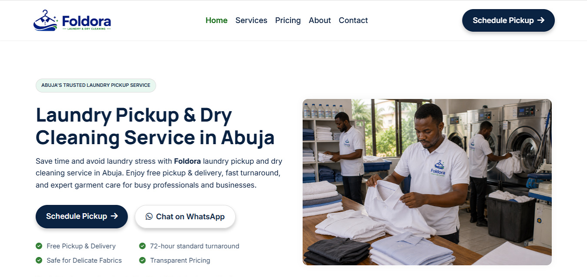
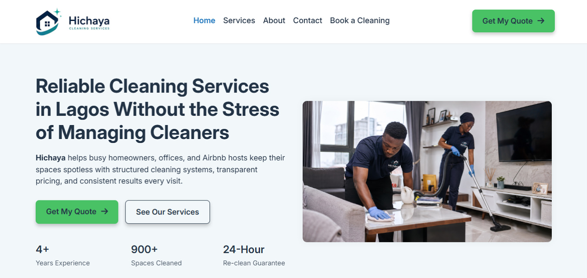
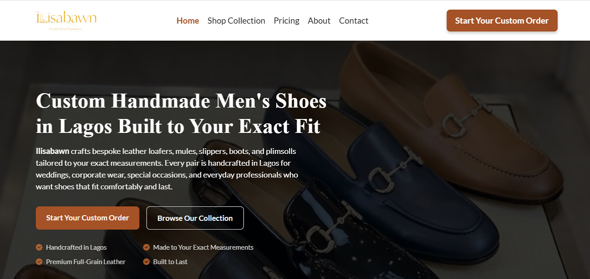
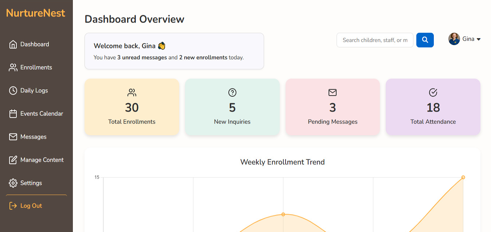

Website Development
I build fast, responsive websites that clearly communicate your services, build trust with potential customers, and guide visitors toward making an inquiry.
I'm Chijioke Nwabasili, a conversion-focused web developer specializing in websites for cleaning and laundry businesses. I create fast, accessible, and user-focused websites that make it easier for service businesses to earn customer trust and turn more visitors into inquiries.
Based in Lagos, Nigeria • Available for freelance and full-time opportunities
Every website I build is guided by four core areas that help service businesses attract, engage, and convert more customers online.
I build fast, responsive websites that clearly communicate your services, build trust with potential customers, and guide visitors toward making an inquiry.
If your website isn't bringing in inquiries, I identify where users get confused or drop off, then improve the content, layout, and user journey to make taking the next step feel effortless.
I simplify navigation, strengthen calls-to-action, and remove unnecessary friction so visitors can quickly find what they need and feel confident contacting your business.
I improve your website's visibility by strengthening its technical SEO, improving page speed, and organizing content so both search engines and potential customers can easily understand your business.
These are the core technologies I use to build fast, accessible, responsive, and conversion-focused websites.
Each project demonstrates how thoughtful UX, clear messaging, and strategic decision-making can improve the way businesses communicate with and convert their customers.

Problem: Many laundry businesses rely heavily on WhatsApp, referrals, or social media, but potential customers often search online before deciding who to trust. Without a clear website, important questions around services, pricing, pickup areas, and booking can create hesitation and lost inquiries.
Key Improvements:
Result: A conversion-focused laundry website concept designed to make services easier to understand, pricing easier to evaluate, and pickup scheduling easier to complete while strengthening the business's local search presence.

Problem: Cleaning businesses need to establish trust quickly, but potential customers can hesitate when a website does not clearly explain the services offered, pricing process, service areas, or what happens after making an inquiry.
Key Improvements:
Result: A cleaning website concept designed around clarity, trust, local search visibility, and a simpler path from discovering a service to requesting a quote or booking a cleaning.

Problem: The website looked visually polished but lacked the clarity needed to improve search visibility and guide potential customers toward making a purchase. Key information about the products, location, and intended audience wasn't immediately obvious.
Key Improvements:
Result: A clearer, search-friendly website that better communicates the brand's products, improves user understanding, and creates a more intuitive path toward starting a custom order.

Problem: Managing childcare information through scattered spreadsheets and disconnected tools makes it difficult for staff to quickly track important data and daily activities.
Key Improvements:
Result: A more intuitive childcare management dashboard concept that gives staff a clearer way to view, navigate, and manage operational information.
Most business websites don't have a traffic problem, they have a communication problem. Visitors land on the site but leave because it's unclear, cluttered, or hard to navigate. They don't know what to do next, so they do nothing.
I'm Chijioke Nwabasili, a conversion-focused web developer specializing in websites for cleaning and laundry businesses while helping service businesses build fast, accessible websites that communicate clearly and guide visitors toward taking action.
Before writing code, I focus on understanding how people use a website, what information they need, and what might prevent them from taking the next step. That thinking shapes every design and development decision I make.
Using HTML, CSS, and JavaScript, I build websites that prioritize accessibility, performance, usability, and maintainable code, ensuring they work well for both users and search engines.
View My ResumeIf your website isn't getting the inquiries you expect, clearer messaging, better structure, and a stronger user experience can make the difference.
Whether you're planning a new website or improving an existing one, I'd be happy to learn about your goals and discuss how I can help.
Lagos, Nigeria · Available for remote collaborations